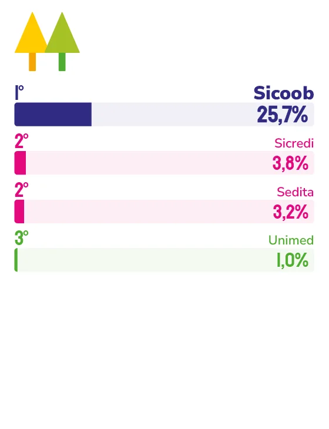

COOPERATIVA
Presença construída ao longo de mais de 37 anos no Espírito Santo sustenta a liderança do Sicoob na categoria Cooperativa.
Pela 12ª vez consecutiva, o Sicoob aparece entre as marcas mais lembradas em Marcas Ícones. Há, porém, um detalhe na leitura que o diretor-executivo do Sicoob Central ES, Nailson Dalla Bernadina, faz desse resultado que chama mais atenção do que o placar em si. “O que mais nos satisfaz é termos sido lembrados justamente na categoria Cooperativa, que é exatamente como queremos ser reconhecidos”, afirma.
Essa não é qualquer lembrança, mas a confirmação, segundo ele, de que o público compreende o modelo de negócio por trás da marca, baseado na participação das pessoas e na geração de benefícios para os próprios cooperados.
Essa distinção não é acidental. Para Nailson, a lembrança espontânea “não vem de uma campanha, mas da soma das experiências acumuladas ao longo do tempo”, uma trajetória que já soma mais de 37 anos e 12 reconhecimentos consecutivos como marca ícone.
Parte da explicação está na forma como a cooperativa se organiza no território. “Somos uma instituição de território, nascida em solo capixaba, que está fisicamente onde precisa estar e conhece as características de cada localidade”, explica o diretor. Não é um detalhe simbólico: as lideranças da cooperativa são capixabas, e boa parte das equipes é formada por profissionais da própria região – pessoas que, segundo Nailson, “acompanharam e participaram ativamente do desenvolvimento local”.
Essa leitura territorial também orienta a forma como o Sicoob interpreta o momento atual do mercado. Nailson descreve um Espírito Santo em “momento de desenvolvimento econômico favorável a investimentos”, com consumidores cada vez mais conectados e exigentes, que buscam experiências financeiras completas sem abrir mão de humanização. Um exemplo prático dessa leitura é o Café Hall Sicoob, que o diretor descreve como “conceito pioneiro em terras capixabas, concebido como espaço de convivência, conexões e geração de negócios”.
O crescimento recente tem números concretos: a cooperativa atingiu a marca de um milhão de cooperados no sistema regional, ao mesmo tempo em que ampliou presença física e evoluiu canais digitais. Mas, na visão de Nailson, nenhum desses marcos isolados explica o resultado. O que explica é a capacidade de “crescer sem perder a essência cooperativista e a proximidade com os cooperados”. Para os próximos anos, a aposta segue na mesma direção: mais tecnologia e produtividade, com expansão de presença no Espírito Santo, Rio de Janeiro, Bahia e Vale do Paraíba, em São Paulo.

Nailson Dalla Bernadina
Diretor-executivo do Sicoob Central ES
“O que não pode mudar é nossa essência cooperativista: continuar sendo uma instituição feita de pessoas para pessoas, comprometida em promover justiça financeira e prosperidade. As ferramentas e os hábitos vão mudar, mas teremos que caminhar na mesma direção, como sempre fizemos.”
101
